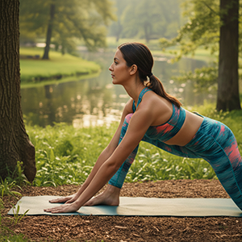
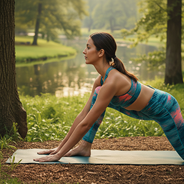

Com foco em eficiência, qualidade e atendimento consultivo, sou o elo entre sua confecção e três das maiores referências do mercado nacional. Minha missão é entender as demandas da sua produção, seja em pequeno, médio ou grande porte, e fornecer as melhores soluções em insumos e serviços.
Otimize sua cadeia de suprimentos contando com a excelência em fios, aviamentos e tinturaria.


Representando a linha completa de insumos essenciais para a sua confecção. Fornecimento direto e consultoria para especificação correta de produtos, garantindo performance e durabilidade em todas as etapas de costura e acabamento.


O parceiro ideal para o serviço de valor agregado que sua malha exige. A GS Tinturaria oferece qualidade, uniformidade de cor e pontualidade, elementos cruciais para a gestão de produção de empresas de todos os portes.
Foco na excelência do processo para garantir que sua matéria-prima atinja o padrão de cor e toque desejado.
 



Os fios de poliamida importados e distribuídos pela Cremer são sinônimo de tecnologia e performance no desenvolvimento de tecidos.
Ofereço acesso direto a este insumo de alto valor, ideal para produtos que exigem toque macio, resistência e excelência em malharia e tecelagem.
Sua produção não pode parar. Estou pronto para atender suas necessidades e garantir o melhor custo-benefício em insumos e serviços. Fale comigo:
Mauricio Josefowicz
Telefone/WhatsApp: (47) 99997-7900
E-mail: mauricio.mpgtech@gmail.com
Siga-me no Instagram: @mpgtech